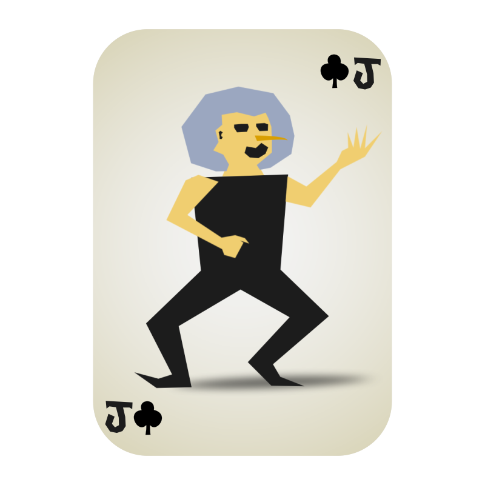
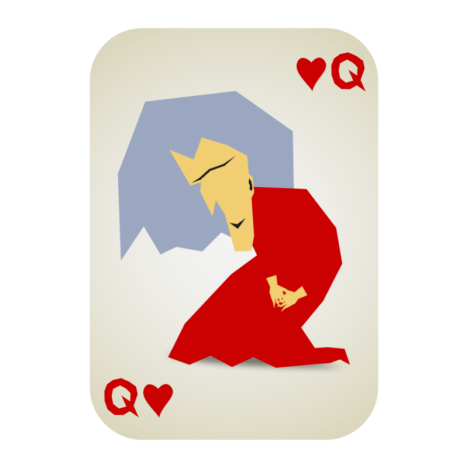
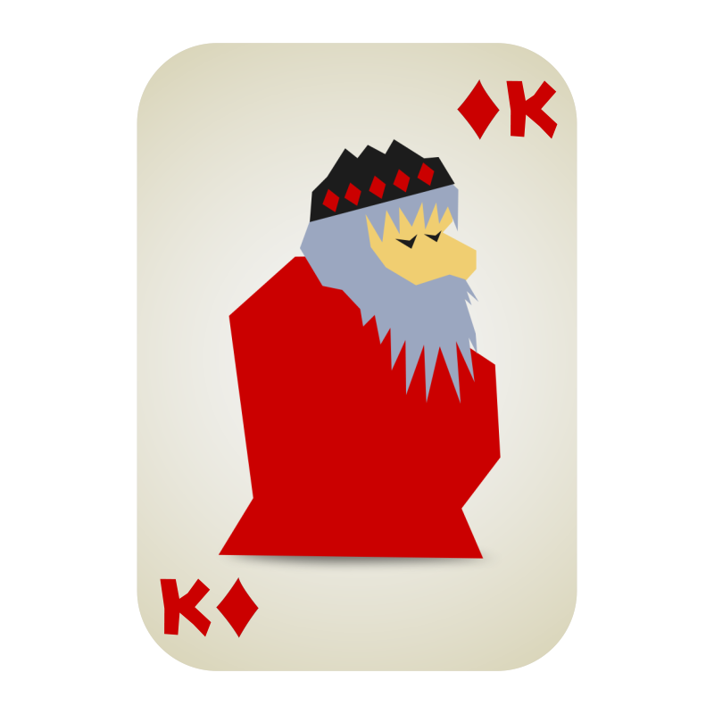
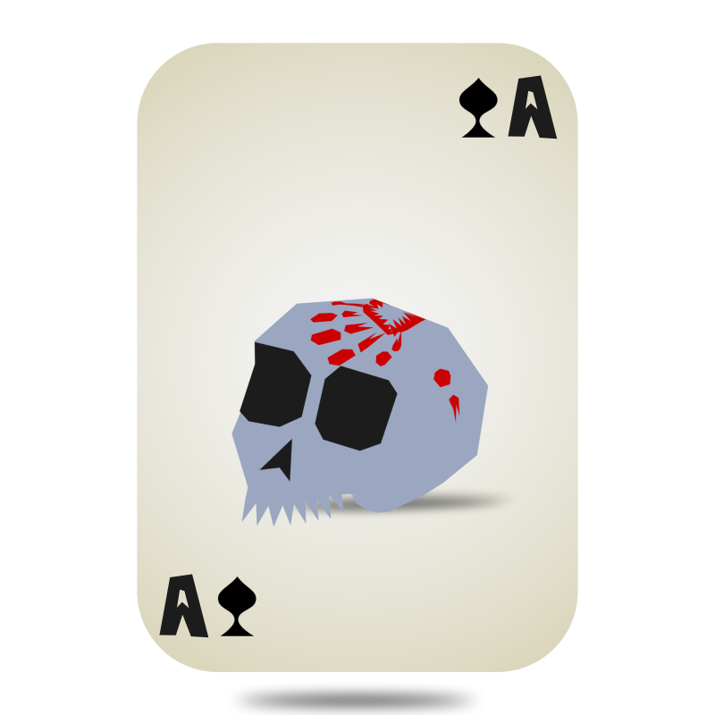

What is the Meaning of This?
Doomcrop is a game for 2+ players that can be played with a regular deck
of playing cards. All that is required is enough table space to lay out
around 20 cards.
Although luck is a component of play, sound strategy is a necessity.
You must think of yourself as the commander of a ramshackle army,
giving orders while a battle rages. Your number cards will engage your
opponents in combat, while your face cards will use their courtly
powers to influence the tides of war.
Your goal is capture your opponent's cards, while protecting your own
cards from capture. Whosoever has captured the most cards by the time
the Draw Pile runs out, wins!
Game Setup
The standard 2-player Doomcrop game uses one deck of playing cards
with the Jokers removed.
(Please see the Optional Rules section
to play with more players, more decks, or more Jokers.)
Shuffle the deck and deal 10 cards to each player, facedown.
Look at your cards and choose one to discard. Arrange your remaining
cards into a 3-by-3 grid. You may look at your own facedown cards at any time.
Take the 10th card and start your Discard pile, face-up. It should be
separate from your opponent's Discard pile. Cards in your Discard pile
cannot return to play, so choose your 10th card carefully.
Place the rest of the shuffled deck facedown between players.
This is the shared Draw pile.
On your turn, flip one of your cards face-up. If it's a Number, you attack.
If it's a Face card, you activate its ability. If you capture a card,
put it in your Discard pile face-up and immediately replace it with a facedown card
from the top of the Draw pile.
After all captured cards have been replaced, pass the turn to your opponent.
Number Cards
Opposing Cards
Each card in your grid has its opposite in your opponent's grid. Cards oppose each other if they have equivalent row height (front, middle, or back), and they are vertically aligned on your left, middle, or right.
Statistically speaking, the majority of your deck is Number cards. Think of them as your rank-and-file troops. All they know is combat.
Flip a Number card face-up to attack its Opposing card.
If the Opposing card is facedown, flip it face-up.
If the Opposing card is a Number:
- If your Number is higher, capture the Opposing card.
- If your Number is lower, the opponent captures your card.
If it's a Face Card, it loses its chance to use its special ability. However, Face cards can only be captured by Numbers 2 or 10. If a Number between 3 to 9 attacks a Face, neither card is captured. Both cards remain face-up.
Hearts win.
Suit Abilities
Number cards have special abilities afforded by their suits. These do not apply to Face cards.
Spades
Spades number cards are like zealous fanatics, willing to die for their cause. Once per turn, in addition to the card you flip, you may capture any Spades card in your grid, face-up or facedown.
Diamonds
Diamonds are like merchants and thieves, using the chaos to gather wealth. When you count out Discard piles at the end of the game, each Diamonds card counts as two cards.
Clubs
Clubs are like archers and bottle-throwers, attacking from a distance. When a Clubs card attacks, you may choose to attack any card in its own column instead of its Opposing card.
Example: a 9 of Clubs can hit the front, middle, or back card that opposes it, no matter where it sits in your grid. It can't hit cards to the left or right from the one it opposes.
Hearts
Hearts are like warriors who share a powerful bond. When a Hearts card attacks, it can combine one adjacent face-up Hearts' value with its own. When your opponent attacks one of your face-up Hearts, you may immediately flip an adjacent facedown Hearts card and combine their values.
Face Card Abilities
Face cards represent the powerful, the connected, and the inevitable. Flip a Face card face-up to activate its special ability.
The Jack
When you flip a Jack, you get three chances to swap the positions of any two of your own cards. You may make fewer swaps, swap any card up to three times, and/or swap the Jack. You may not turn any cards face-up or facedown during this process.
The Queen
When you flip a Queen, turn two of your cards facedown. This may include the Queen.
The King
When you flip a King, flip all of your Number cards face-up. Then, each card you flipped attacks its Opposing card. The King attacks as a 7. Number cards that were already face-up do not attack.
The Ace
When you flip an Ace, instantly capture any face-up or facedown card in play, and the Ace.
Ending the Game
When the Draw pile runs out, continue taking turns until both
players agree there are no more actions worth taking.
Leave your remaining cards in the grid and count out your Discard pile.
The winner is the player with more cards in their Discard pile,
including doubled Diamonds.
In the event that Discard piles are tied, or both players want to
continue the game, shuffle your Discard pile and your remaining
cards together - this is your new individual Draw pile.
Deal yourself a new 3-by-3 grid and continue playing until one
player's Draw pile runs out.
Congratulations
You played Doomcrop
Coming Later

Greetings traveler! Doomcrop was designed by Riley Adamson. Riles lives in LA and organizes files on some good TV shows. The art was made in After Effects and converted to SVG animations with Lottie. Please DM me if you want to discuss the game or the site!
Doomcrop To-Do List
- Replace all placeholder guys with new art
- Thorough test of game rules
- Video explaining the rules of the game
- Interactive web-based Doomcrop vs. AI and other players
- Employ artists to make the cards look better
- Sell custom decks with rules packed-in
Playing with Multiple Decks
Doomcrop can be played with more than one deck of cards.
- Players may shuffle multiple decks together to form the Draw pile. This is workable even if the decks' back-face art doesn't match.
- If players want their own individual Draw piles, these can be dealt out evenly from the shared Draw pile at the start of the game.
- Players may use multiple decks to form individual Draw piles, as long as each player has an equal amount of cards at the start of the game.
Playing with 3+ Players
With more than 2 players, it is recommended to use multiple
decks as outlined above.
When playing Doomcrop with 3 or more players, determining Opposing cards
is more complicated. You now have multiple axii of opposition. With 3
players, you have an axis on both sides of your grid. With 4 players,
you also have original top row axis.
With odd numbers of players, the official rule is that players may
only attack their opponents directly to their left and right.
With even numbers of players greater than 4, players may also attack
the opponent directly opposite them. It is recommended that players
amend this as a house rule if they wish to be able to skip players
when attacking.
Playing with Jokers
Unlike the other face cards, the Joker can be captured by any Number card.
When you flip a Joker face-up, or when you capture a Joker,
roll a 6-sided die and obey the table below.
- Players swap sides of the board.
- Players swap Discard piles.
- Each player captures all of their own cards and deals a new 3-by-3 square.
- All face cards are activated, including face-up ones.
- Each player shuffles their own cards together and deals their 3-by-3 square randomly, facedown.
- For the rest of the game, play with the top card of the Draw pile face-up.
Epic Techniques
If you want to add Epic Tech to your game, observe the following rules.
- If your grid contains 4 Hearts cards in a square, you may turn any amount of them facedown.
- If your grid contains 4 Diamonds cards in a square, you may flip any amount of their Opposing cards face-up. No other abilities are activated.
- If your grid contains 4 Spades cards in a square, you may capture any amount of them.
- If your grid contains 4 Clubs cards in a square, you may flip any amount of them face-up, and attack any cards they could normally hit.